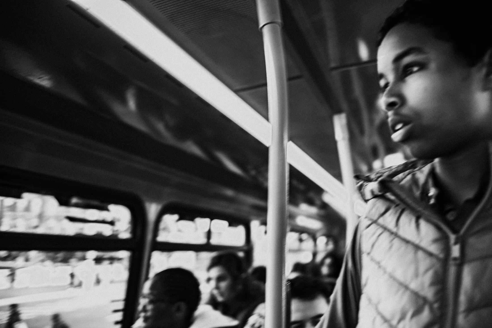
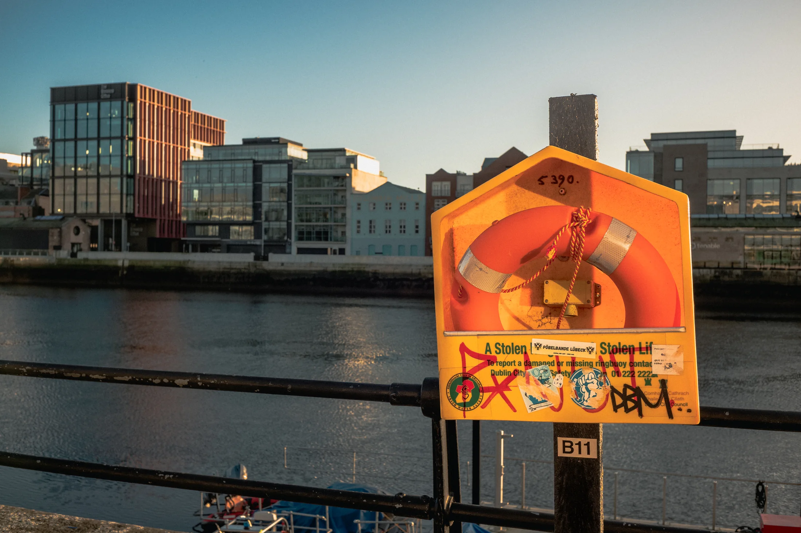
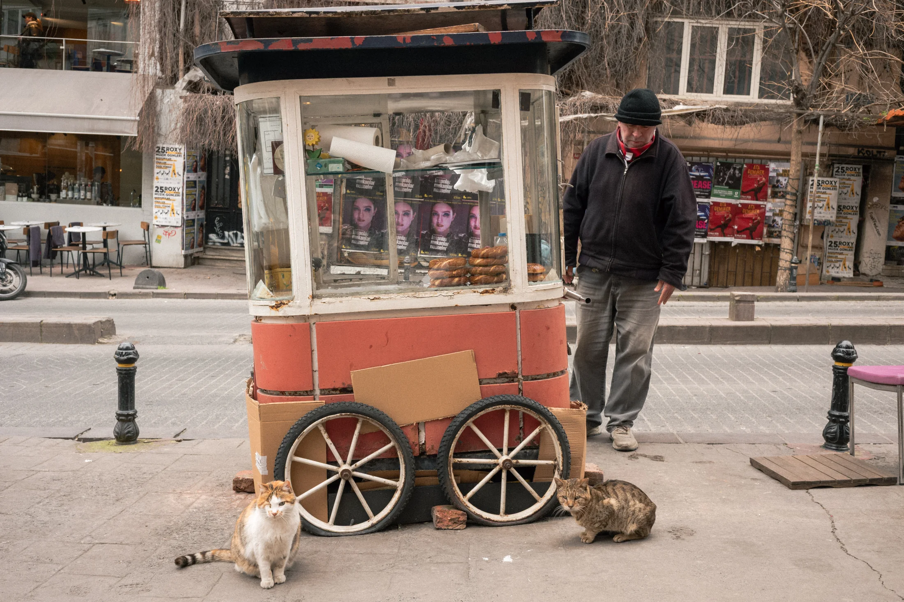
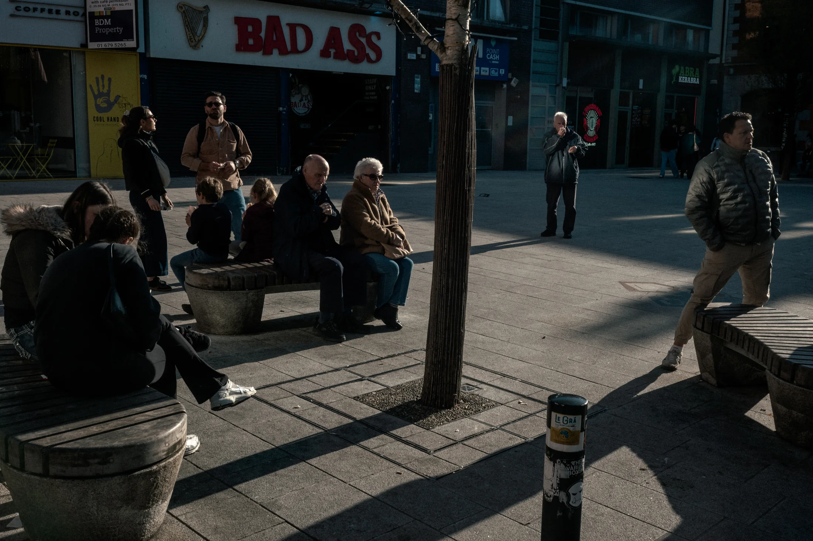
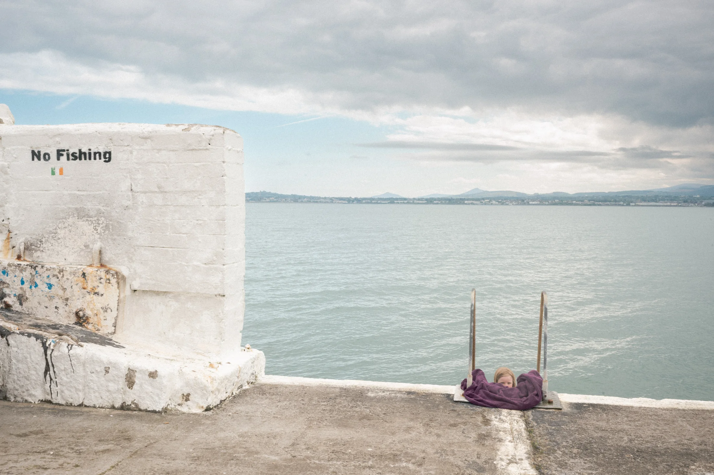
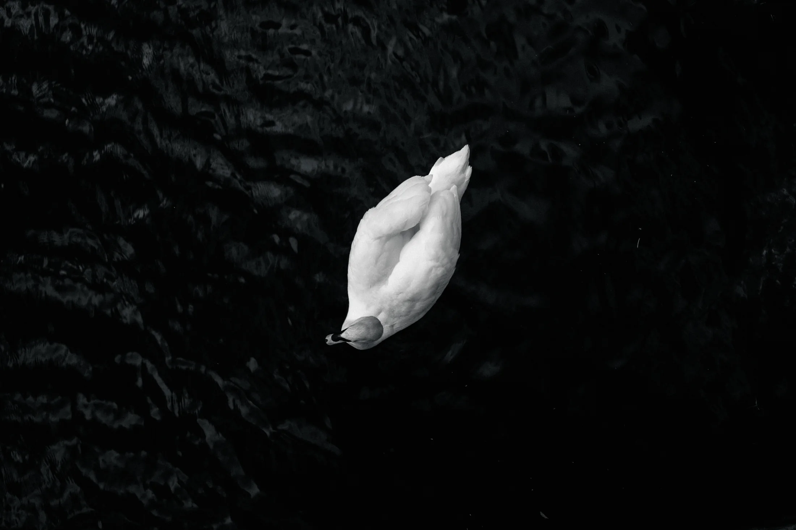

Documentary photography
Moments held between light, street and silence.
Work
Photographs arranged as short visual chapters: urban quiet, passing faces, weather, interiors and traces of daily life.
Prints
Selected prints for quiet rooms.
Small gallery editions with restrained paper, generous borders and a focus on atmosphere over spectacle.

Urban Room 01
30 x 40 cm / 50 x 70 cm
After Rain 03
Open editionAbout
Vinicius Banhara
Brazilian photographer based in Dublin. His work looks at light, color and urban space through documentary fragments and quiet scenes from everyday life.
Contact